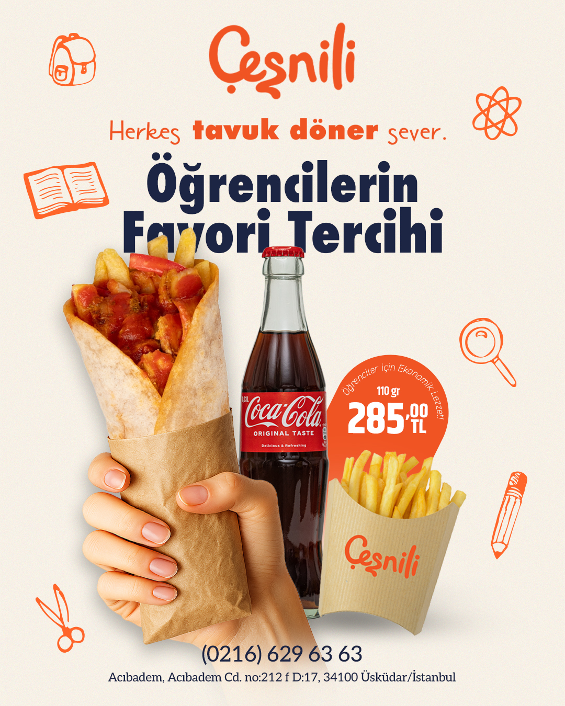
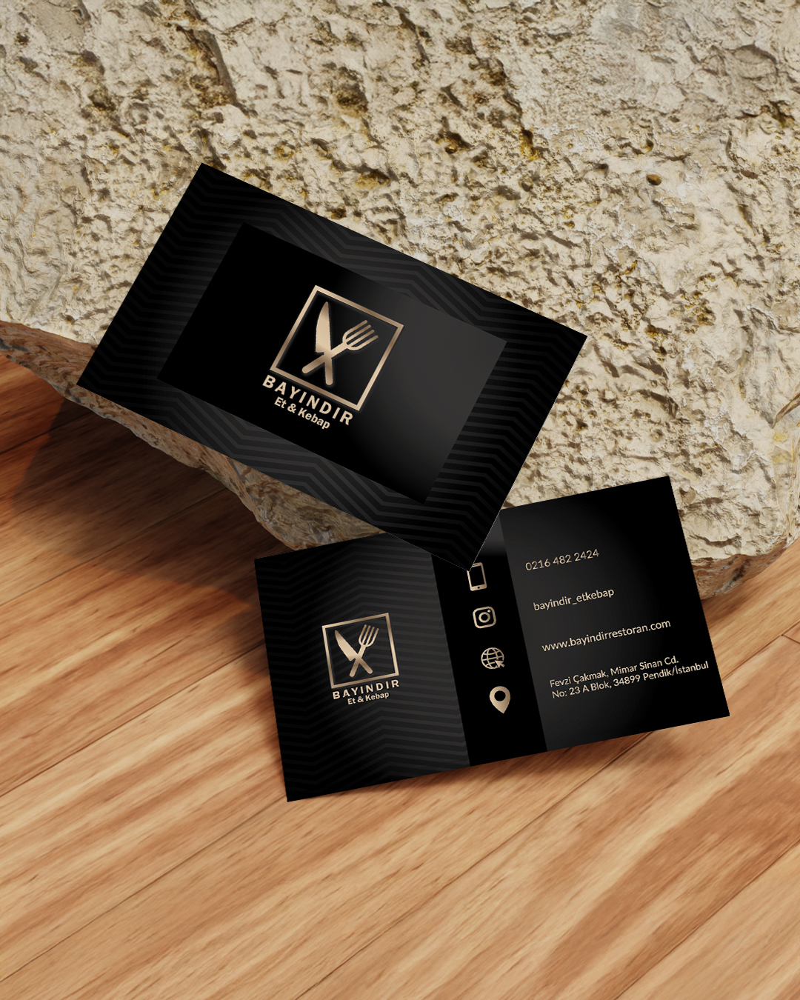

Markalar için dikkat çeken, amaca hizmet eden ve dijitalde yaşayan görsel dünyalar tasarlıyorum.
Markalara özel post, hikâye ve kampanya görselleri.
Menü, broşür, afiş ve branda için baskıya hazır tasarımlar.
Logo, renk, tipografi ve kurumsal materyallerle tutarlı bir görsel kimlik.
Web banner’ları, YouTube kapakları ve dijital mecralara özel görseller.
Markalara özel, yapay zekâ destekli görseller ve kısa video içerikleri.


FAZ 01
İhtiyaçları, hedef kitleyi ve proje amacını netleştiririm.
FAZ 02
Moodboard ve farklı görsel yönler oluştururum.
FAZ 03
Tasarım ve uygulama süreçlerini titizlikle yürütürüm.
FAZ 04
Final dosyalarını mecralara uygun şekilde hazırlarım.
Modern tasarım standartlarını yakalamak ve üst düzey çıktılar üretmek için hâkim olduğum ekosistem.
Freelance Grafik Tasarımcı
Kurumsal kimlik, marka görsel dili, YouTube thumbnail tasarımı ve dijital kreatif çalışmalar kapsamında proje bazlı tasarım desteği sağlıyorum.
Freelance Grafik Tasarımcı
Sosyal medya içerikleri, kurumsal kimlik ve reklam baskı materyalleri tasarımı.
Grafik Tasarımcı
Sosyal medya içerikleri, kurumsal kimlik ve reklam baskı materyalleri tasarımı.
Grafik Tasarımcı
Markalara yönelik sosyal medya tasarımları ve kreatif üretim süreçleri.
Grafik Tasarımcı
E-ticaret ürünlerinin baskı süreçlerine yönelik grafik tasarım çalışmaları.
Üniversite Eğitimi
İletişim ve Tasarımı Bölümü.
Önlisans Eğitimi
Grafik Tasarımı Bölümü.
YENİ BİR FİKİR Mİ VAR?